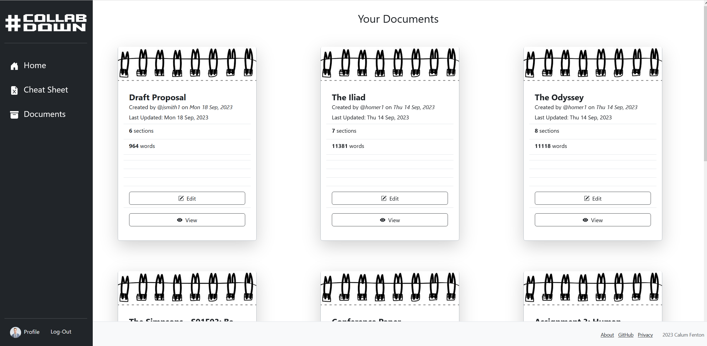
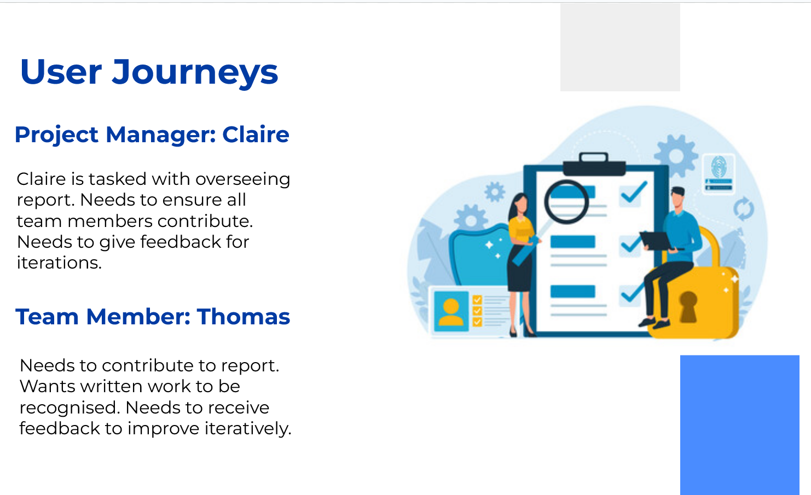

The web application Collabdown was created as part of my MSc Interactive Media dissertation project. It is a web-based application for collaboratively creating Markdown documents. This dissertation showcases the application of the Software Development Life Cycle (SDLC) to a collaborative document creation web application. Focused on usability, the research addresses the intricacies of designing a collaborative document tool and explores the benefits of integrating MarkDown.
The study identifies usability requirements and navigates challenges inherent to collaborative tools. A chosen user interaction model informed a task tree, guiding design objectives and resulting in wireframes for front-end development. While the initial development cycle was successful, ongoing refinement and testing are recommended.
In summary, this dissertation contributes insights into fundamental usability requirements for collaborative document creation applications. Additionally, it explores the potential of utilizing MarkDown as a primary format for user input. As a recent graduate with a proficiency in UX/UI design, this project exemplifies my ability to address complex design challenges and provide valuable contributions to user-centric applications.
The approach of the project followed the outline of a typical SDLC. It began with research. Available literature was reviewed and existing applications on the market were compared and analysed. Relevant usability requirements were identified at this stage.
Following from that, the general functionality of the application was determined, and the design phase began. Wireframes were created and various design decisions were weighed against each other. After this was the implementation stage, both front and back end. Finally, user testing was carried out and heuristic analysis was applied in the evaluation stage.
Relevant scientific literature was reviewed, followed by an analysis of existing document processing tools and collaborative applications (MS Word, Google Docs, etc). this was to determine the main requirements when developing such an application.
The application was developed in order to address the main challenges present in collaborative work using technology. One of these is the so-called 'free-rider effect' which causes productive losses in many areas (Pilkington & Sanders, 2014). Additionally, there is a need for users to have equal familiarity with software to reduce friction when working collaboratively (Karpova et al., 2009). Finally there is difficulty co-ordinating groups to contribute equitable amounts of work (Hadjerrouit, 2013).
From this, the main usability requirements that needed to be taken into consideration for the design stage were clear. First of all, there needed to be clear roles and structures for users, such as project managers or administrators. Second of all, it needed to be accessible and use familiar cues and affordances for users in order to gain the best adoption of all team members for effective collaboration. Thirdly, there needed to be synchronised and minimal delays for updating documents for all users. Finally, social feedback and visibility of other users would need to be prioritised, such as through a comment system. All of these requirements were needed in order for the application to enable effective collaboration.
Various wireframe designs that were drawn up in the design stage.
The design phase of CollabDown navigated through user assumptions, identifying key tasks, and user personas. The interaction model, inspired by Ha and Lee (2015), influenced the selection of a direct manipulation interaction style, ensuring user control and satisfaction. Two main user types, document administrators and team members, led to the creation of user personas — Claire, a project manager, and Thomas, an engineer. The main tasks for all users encompass navigation, input, and validation.
Wireframes, considered as a tool for exploration, centered around immediate visual access to document sections. After exploring various designs, the chosen one adopts a vertical arrangement of sections with navigation on the left side of the screen. This choice maintains the hierarchical structure of the document, reflecting its final layout. The left-hand navigation also aligns with Fitts' law for ease of user interaction in a browser setting.
A consistent color scheme was implemented, considering accessibility for users with red-green colorblindness. Simplicity in design elements was prioritized for easy comprehension. Additionally, a MarkDown cheat-sheet feature was incorporated to enhance learnability, providing users with quick access to MarkDown syntax information. These design decisions aim to create a well-rounded user experience, fostering immediate synchronisation, high learnability, and secure user access control — a trifecta of essential design goals.
During this phase, the main two types of users were identified.
User journeys and task trees were created to help the design process.
The implementation, spanning approximately one and a half months, proceeded smoothly without major challenges, thanks to the successful completion of the design stage and the convenience of chosen technologies. The implementation phase focused on translating design priorities into a functional application. The process began with prioritizing back-end functionality, emphasizing successful submission of user input to server-side files and database entries.
For ease of implementation, I opted for a PHP-based application, complemented by Bootstrap CSS and JavaScript libraries. MySQL served as the relational database, ensuring efficient storage of user details, MarkDown files, and document information. Git facilitated version control and code management on GitHub.
Bootstrap simplified front-end development, offering consistency, simplicity, and accessibility. Leveraging this popular CSS framework streamlined the visual representation of the application, aligning with familiar user interfaces.
The resulting prototype application was evaluated and tested. As part of this process, user testing was conducted using the System Usability Scale (SUS).
Participants were college students who were instructed to use the application in various ways, and to then fill out a SUS survey and submit optional anonymous feedback. The SUS score was then compared to percentile rankings of other applications. The average SUS score was approximately 79.3, which is in the 85th percentile. This result meant that the usability of the application scored high amongst users.
Furthermore, analysis was conducted on the application based on Schneiderman's Eight Golden Rules of interaction design. The emphasis of consistancy and allowing users to remain in the central locus of control in the design of the application was important in order to allow a high level of usability in user interactions.

The SUS survey results from users charted.

The percentile ranking distribution of SUS scores.